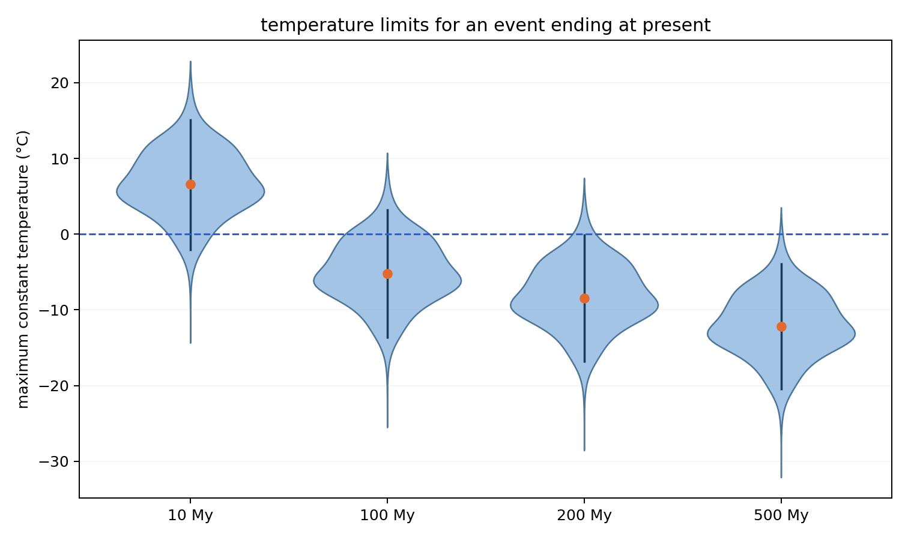
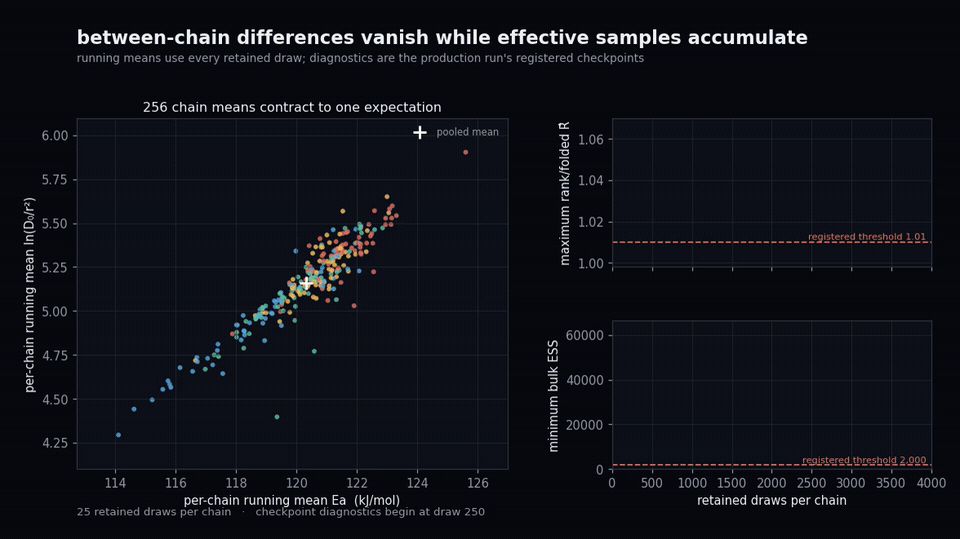
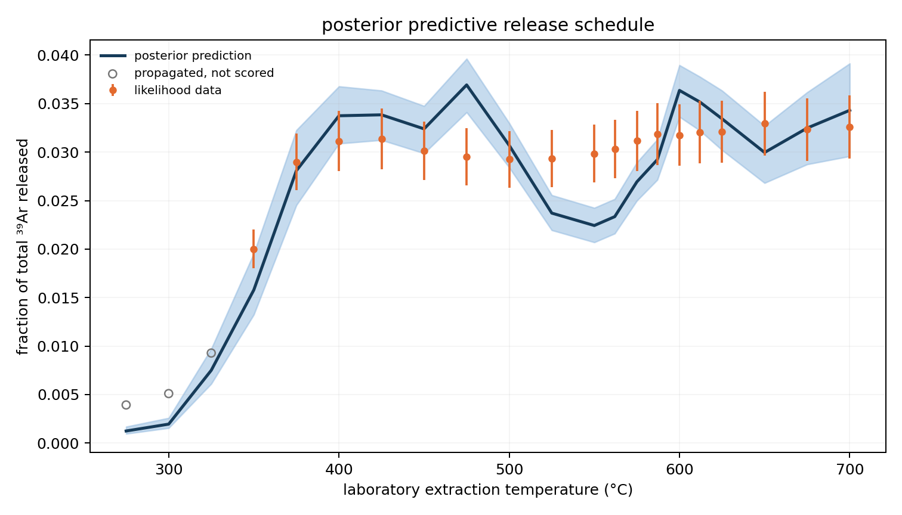
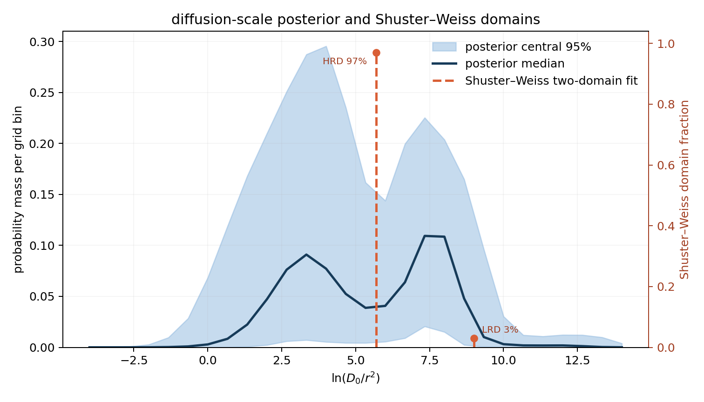

cold Mars analysis
Current status: the eight-A100 rerun is complete. The primary run, independent replicate, and five sensitivities all pass the predeclared sampler gates. The primary run misses one scientific gate—14/18 rather than 15/18 observations fall inside the 90% posterior-predictive intervals—so this is a validated sampling result with a visible model discrepancy, not a finished scientific claim.
what the rerun says
For a 100 My constant-temperature event ending at the present, the primary posterior gives a 1%-argon-loss temperature limit of −5.22°C at the median and [−13.76, 3.31]°C for the central 95% interval.
There is a 13.0% posterior probability that this upper limit exceeds 0°C. This is not the probability that Mars was warm. It means a 100 My above-freezing event is not cleanly excluded by this model after uncertainty in the diffusion-scale distribution is propagated.
The independent replicate gives [−13.66, −5.29, 3.33]°C. Its median differs by 0.07°C and its interval endpoints by at most 0.10°C.

sampler diagnostics
| run | retained states | max R̂ | minimum bulk / tail ESS | divergences | minimum BFMI | gate |
|---|---|---|---|---|---|---|
| primary, 28 bins | 1,024,000 | 1.0037 | 61,670 / 55,607 | 0 | 0.907 | pass |
| independent replicate | 1,024,000 | 1.0041 | 61,118 / 53,736 | 0 | 0.900 | pass |
| rougher prior | 512,000 | 1.0094 | 25,870 / 18,339 | 0 | 0.829 | pass |
| 20-bin grid | 512,000 | 1.0062 | 39,374 / 32,299 | 0 | 0.881 | pass |
| 36-bin grid | 512,000 | 1.0090 | 24,756 / 21,403 | 0 | 0.879 | pass |
| 15% discrepancy | 512,000 | 1.0032 | 69,655 / 75,626 | 0 | 0.895 | pass |
| 20% discrepancy | 512,000 | 1.0027 | 82,934 / 99,834 | 0 | 0.866 | pass |
Gates: max rank/folded R̂ ≤ 1.01; bulk and tail ESS ≥ 2,000; zero divergences; max-depth frequency < 1%; every-chain BFMI > 0.30; mean grid-edge mass < 0.5%. All primary temperature-quantile Monte Carlo errors are below 0.09°C.
chain evolution
Both animations preserve chronological draw order and begin after 500 frozen-kernel settling draws were discarded. The comet view shows 200 one-second trajectories staggered 0.05 seconds apart; the running-mean diagnostic uses all 256. They show retained sampling, not adaptation.


The motion is supporting evidence, not the convergence criterion. The numerical R̂, ESS, BFMI, divergence, tree-depth, and independent-replication checks above carry the diagnostic conclusion.
posterior predictive check
The primary model's standardized residual RMS is 1.393 and its largest median residual is 2.50σ, both inside the registered bounds. Coverage is 14/18, one observation short of the registered 15/18 requirement.
The misses occur at 475, 525, 550, and 562°C. They form a structured mid-schedule pattern. The 20- and 36-bin grids and a rougher prior still cover 14/18, so the pattern is not a grid-resolution or smoothness artifact.
With fixed discrepancy terms of 15% and 20%, coverage is 18/18. Those runs widen the upper endpoint of the recent 100 My limit to 5.08°C and 5.59°C while leaving the median near −5°C. They diagnose sensitivity; passing a check is not sufficient reason to choose an error model.

what was fit
- A smooth logistic-normal distribution over
ln(D₀/r²), avoiding discrete-domain labels and label switching. - A shared activation energy with prior N(117, 5.4²) kJ/mol.
- Twenty-one timed extraction steps from 275–700°C are propagated; the 18 steps from 350–700°C enter the likelihood.
- The primary uncertainty combines reported measurement error with a fixed 10% relative discrepancy term.
- NUTS runs in affine coordinates, discards 500 frozen-kernel settling draws, and retains ordinary post-settling states from 256 chains.

thermal assumptions that still matter
The plotted transform assumes a 1.3 Ga rock, a potassium-40 half-life of 1.248 Ga, a constant-temperature event, and a 1% total-radiogenic-argon loss threshold. It integrates radiogenic production during the event and post-event regrowth through the present-day inventory denominator. These are conditional limits, not inferred Martian temperature histories.
Timing is especially important. For a 100 My event ending 0, 250, 500, or 1,000 My ago, the primary intervals are [−13.76, −5.22, 3.31]°C, [−12.18, −3.63, 4.93]°C, [−9.97, −1.38, 7.21]°C, and [0.04, 8.66, 17.35]°C. The positive lower endpoint in the oldest case disappears in prior and observation-error sensitivities and should not be treated as robust.
Tracked manifests, diagnostics, summaries, plots, and compact posterior subsets ↗
why the old result was rejected
The 2025 artifact has maximum rank-normalized/folded split R̂ of 12.0. Its temperature code also used the faster, low-retentivity domain as though it were the high-retentivity domain. That mismatch exactly recreates the old [−21.21, 41.99]°C interval. Reformatting it as a violin does not repair it.
show the forensic reproduction